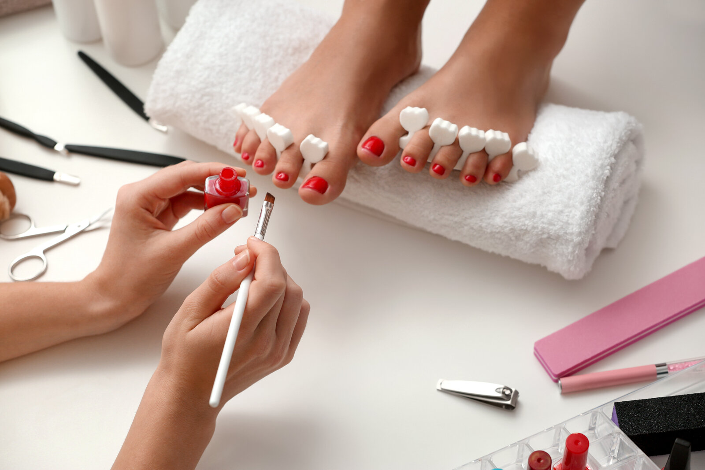
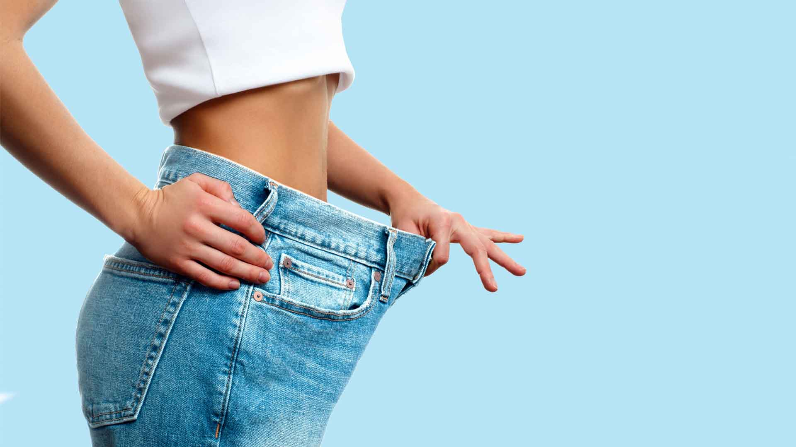
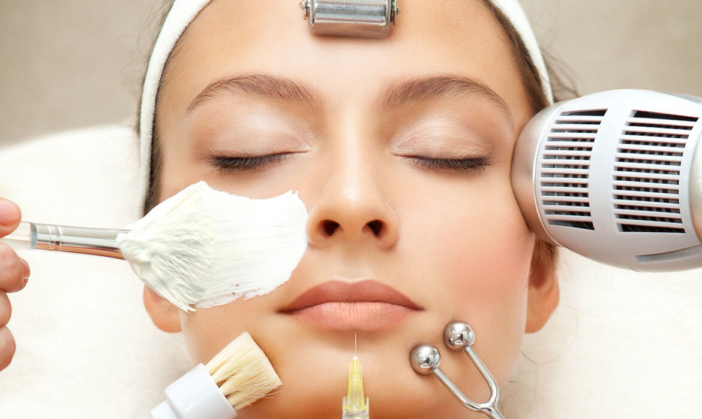
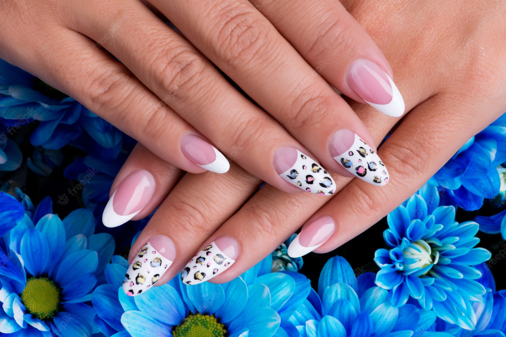
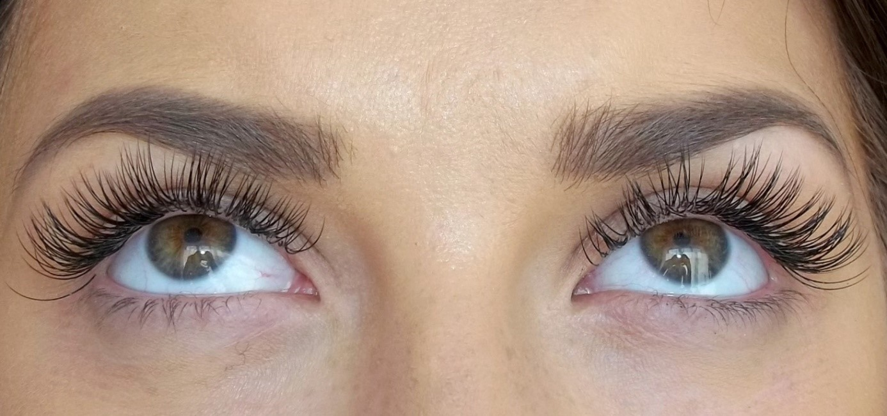
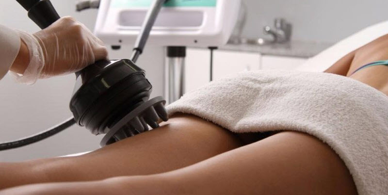

Lazer epilasyon nedir?
Işınların uyarılmasıyla elde edilen ışık demeti olan lazer, tıbbi ve estetik gibi pek çok alanda kullanılır. Kozmetik ve psikososyal bir sorun olan tüylenmenin giderilmesi için kullanılan lazer epilasyon yaklaşık 25 senedir uygulanan bir yöntemdir. Vücudun tüm bölgelerinde uygulanabilen lazer epilasyonda, ilk uygulamadan önce minimum 15 gün boyunca tüylere dokunulmamış olması gerekir. Böylece hem tüylerin miktarı ve sertliği rahatça gözlenebilir hem de lazerden alınacak verimliliğin artması hedeflenir. Planlama yapıldıktan sonra uygulama yapılacak bölge temizlenir. Kıl tipi ve yoğunluğu, cilt tipi ve rengi gibi parametreler uzmanlar tarafından incelendikten sonra uygun cihaz ile istenilen bölgeye seri atışlar yapılarak işlem başlar. İşlemin tamamlanması cilt ve tüy tipine, rengine, alanın genişliğine göre değişiklik gösterir. Belirli periyotlarla işlemin tekrarlanması gerekir. Lazer epilasyonun amacı kıl kökünün yok edilmesidir. Bu noktada lazer ışığının oluşturduğu ani ısı, koyu renkli tüyler üzerinde daha etkilidir.
Lazer epilasyon seans süresi ve aralıkları nasıldır?
Lazer epilasyonun uygulanması sırasında bölgede bulunan kıllar farklı uzunluklarda olduğundan lazerin etkinliği de farklıdır. Tek uygulamada bölgedeki tüm kılları bir seansta yok etmek bu sebepten mümkün değildir. Vücut yapısı, hormonal denge ve cilt tipi farklılıkları da uygulama süreleri üzerinde etkilidir. Seans süreleri de uygulama yapılacak bölgenin genişliğine göre değişiklik gösterir. Dudak üstüne yapılan lazer epilasyon saniyeler sürerken, tüm yüz için yaklaşık 10 dakika gereklidir. Ya da iki bacak için yaklaşık 1 buçuk saat gerekliyken, koltuk altı ve bikini bölgesi 15 dakikada, erkek sırtı ise yaklaşık 40 dakikada tamamlanabilir. Uygulama aralıkları da yine aynı faktörlerden dolayı değişiklik gösterir. Ancak seans aralıkları genellikle 1 buçuk ay civarındadır.
Lazer epilasyon kaç seansta biter?
Hem erkeklerde hem de kadınlarda etkili olan lazer epilasyon, estetik kaygıya yol açan istenmeyen vücut tüylerinin lazer cihazı ile yok edilmesidir. Lazer epilasyonun etkinliği kişinin fiziki ve hormonal yapısına, cilt ve kıl rengine, uygulama yapılacak bölgede bulunan kılların sertliğine göre değişkendir. Koltuk altı, bacağın alt kısmı, bikini bölgesi gibi alanlar 4 ile 8 seans, yüz, kol ve sırt gibi bölgeler 6 ile 12 seans sürebilir. Farklı bir deyişle vücut tüylerine rengini veren melanin adlı madde, lazer ışınlarının daha iyi emilmesini sağlar. Dolayısıyla koyu renkli vücut tüyleri, lazer epilasyonun oluşturduğu ani ısıya daha fazla maruz kalır. Lazer ışının tutulumunun kolay olması, bu türdeki tüy foliküllerinin daha çabuk yok edilmesine olanak sağlar. Açık renkli vücut tüylerinin lazer epilasyon ile yok edilmesi, koyu renklilere kıyasla daha zor olmasının sebebi de budur.
Lazer epilasyonun yan etkileri var mı?
Lazer epilasyonda kullanılan lazer cilt altına ve ter bezlerine zarar vermeden sadece kıl tüylerini hedef aldığı için kullanımı son derece güvenlidir. Ancak uygulama esnasında bir miktar acı hissedilebilir. Diğer epilasyon uygulamalarının yanında acısız sayılabilecek lazer epilasyon uygulamaları sonrasında hafif bir kızarıklık ve ödem oluşabilir. Uzmanınız tarafından uygulanan steroid içerikli kremler bu şikayetleri hızla giderir. Bunun yanında ince krut, veziküllerde hiper ve hipopigmentasyon gibi yan etkiler görülse de bunların tamamı geçici komplikasyonlardır.
Lazer epilasyonun zararları var mı?
Lazer epilasyon yalnızca kıl köküne etki eder. Kıl kökünde bulunan melanin pigmentine lazer ışığı tutularak kökün yakılması hedeflenir. Lazeri diğer yöntemlerden ayıran en önemli özellik, kıl ve kökünün etrafında bulunan dokuya zarar vermemesidir. Bu yüzden işlem sonrasında herhangi bir kısıtlama gerektirmez. Uzmanlar tarafından, uygun cihazlarla uygun atımlar yapıldığından leke ve iz bırakmaz. Özellikle genital bölgeye uygulanan lazerin tehlikeli olduğu söylense de uygulama derinin altına ilerlemediği için bölgeye herhangi bir zarar vermez. Cilt kanseri ile bilinen bir bağlantısı yoktur. Uygulanan diğer bölgelerde de lazer epilasyonun ispatlanmış bir zararı bulunmamaktadır.
Lazer epilasyon sonuçları kalıcı mı?
Hızlı ve etkili sonuç veren lazer epilasyonun seansları tamamlandığında istenmeyen tüy ve kıllardan tamamen kurtulmuş olursunuz. Kıl köklerini yakarak yok eden lazer epilasyon sayesinde kılların tekrar uzaması mümkün değildir. Ancak doğru cihazlarla uzman kişiler tarafından yapılması etkinliği, süresi ve sağlığınız açısından önemlidir.

Manikür Nedir?
Manikür, el ve ayak bakımının yapılması, temizlenmesi ve tırnakların şekillendirilmesi için yapılır. Manikür el ve tırnak bakımının yapılması, tırnakların derinlemesine temizlenmesi ve tırnak şekillendirmesinin yapılmasıdır.
Manikürün Pedikürden Farkı Nedir?
Manikür ellerin derinlemesine temizlenmesi ve güzelleştirilmesi için yapılır. Manikür sırasında ölü deriler iyice temizlenir. Aynı zamanda cilt bakımı yapılır ve isteğe göre tırnaklara şekil verilir. Pedikürde de aynı genellikle işlemler yapılır. Ama manikür ile pedikür arasındaki en önemli fark pedikürün ayak tırnaklarına uygulanan bir uygulama olmasıdır.
Manikürden Sonra Ne Yapılması Gerekir?
Manikür yapıldıktan hemen sonra eldiven takmamaya ya da ellerinizle bir şeyin temas etmemesine dikkat etmeniz gerekir. Manikürden sonra herhangi bir iş için ellerinizi çok fazla kullanmamanız gerekir. Eğer tırnaklarınıza nazik solüsyonlar uyguladıysa, bilgisayar klavyesi gibi tırnaklarınıza doğrudan değecek işler yapmamaya dikkat etmeniz gerekir. Manikür, tırnak şeklinize ve yapınıza uygun yapılan bir tırnak şekillendirme işlemidir.
Pedikür Nedir?
Pedikür, ayak (pedi) ve tedavi (cure) kelimelerinden türetilmiştir. Pedikür, elde edilen bulgulara göre ilk Mısır’da, Firavun’un hizmetlileri tarafından uygulanmaya başlanmıştır. Pedikür, ölü etleri temizleyen, sertleşmiş ayak parmaklarınızı ve derinizi yumuşatan, ayak tırnaklarınızı tedavi eden bir tedavidir . İyi bir ayak tedavisi çok iyi hissettirir, ancak pedikür uygulaması cila tipinden masaja kadar değişebilir. Bu nedenle doğru pedikür merkezini bulmak önemlidir .
Pedikür ne işe yarar?
Ayak sorunlarınız varsa, düzenli pedikür tedavi için destekleyici olabilir. Böylece, tedavi süreciniz daha kısalabilir. Pedikür, duruşunuzun düzelmesine yardımcı olabilir; doğal olarak bakımlı, sağlıklı ayaklarla daha rahat yürürsünüz. Diğer tedavilerle birleştirildiğinde sizi rahatlatabilir. Pedikür uzmanınız, ayaklarınıza birkaç yumuşatıcı ve yatıştırıcı krem ile masaj yaptığında, kendinizi tüy gibi hissedersiniz!
Pedikür Yaparken Nelere Dikkat Edilmeli
Pedikür evde de uygulayabileceğiniz bir işlem olsa da, istediğiniz sonuca ulaşmak için bir profesyonele yaptırmanızda fayda vardır. Özellikle tırnak batması sorununuz varsa, güvenilir bir merkezden yardım almanız gerekir. Genel olarak işlem yaptırırken dikkat etmeniz gereken birkaç husus vardır. Öncelikle işlem yaptıracağınız yerin hijyenik olmasına dikkat edin. Pedikür yaptıracaksanız ya kişisel pedikür setinizi kullanın, ya da kullanılan aletlerin sterilize edildiğinden emin olun. Ayaklarınız tam yumuşamadan işlem yapmamaya özen gösterin. Bu tırnak etlerinin ve cildinizin tahriş olmasına ve yaraların oluşmasına neden olabilir. Sağlıksız ortamda pedikürün yapılması mantardan AIDS’e birçok hastalığın bulaşmasına neden olabilir. Tırnaklarınızın doğru kesilmemesi tırnak batıklarına ve şeytan tırnağına sebep olabilir. İşlemi işinde uzman kişilere yaptırdığınızdan emin olun.

Bölgesel Zayıflama Nedir?
Bölgesel zayıflama; Vücudun belli bölgelerinde bulunan fazla yağları yakmak için kullanılan uygulamadır. Fazla kilosu bulunan kişiler hemen zayıflamak ister. Bu doğrultuda teknolojik cihazlar kullanarak vücutta bulunan fazla yağ tabakalarından kurtulmak mümkündür. Bölgesel zayıflama daha çok basen, göbek, kol ve bacaklarda hedeflenir.
Bölgesel Zayıflama Nasıl Olur?
Fazla kilosu olmayan kişiler vücudun belli bölgelerinde biriken fazla yağlardan kurtulmak amacıyla bölgesel zayıflama yöntemlerini tercih ediyor. Bölgesel zayıflamada dikkat edilen beslenme alışkanlıklarının dışında yeni geliştirilmiş teknolojik cihazlardan ve ürünlerden de yararlanmak mümkündür. Bu doğrultuda kliniğimizde kullandığımız birbirinden özel ileri düzey seviye sahip cihazlarla zayıflama konusunda etkili sonuçlara imza atıyoruz.

Cilt Bakımı Nedir?
ilt bakımı, cildin ihtiyaçlarına uygun ürünleri düzenli olarak kullanarak elde edilen sonuçlar bütünüdür diyebiliriz. Herkes farklı cilt yapılarına sahiptir. Cilt yapısını tanıyıp eksikleri gidermek adına bakım yapmak oldukça önemlidir. Böylece daha sağlıklı görünen, aydınlık ciltlere sahip olunabilir. Cildin eksiklerini görmemek, cilt tipine uygun olmayan ürünler kullanmak akne, yara vb. farklı cilt sorunlarının oluşmasına yol açabilmektedir. Bu nedenle doğru cilt bakımı yapmak son derece önemlidir.
Cilt bakımının yararları nelerdir?
Kendi cildinize özel ürünler ile cilt bakımı rutinleri oluşturmak sağlığınız açısından oldukça yararlıdır. Örneğin kuru cildinize nem sağlayacak ürünler kullanmak yüzünüzdeki pul pul dökülen deriyi yok eder ve cildinizi daha canlı bir hale dönüştürür. Aynı şekilde aktif sivilceler ile baş etmeye çalışıyorsanız akne önleyici temizleyicileri cilt bakım rutininize ekleyebilir ve ileride oluşacak aknelere önceden çözüm bulabilirsiniz. Ciltteki fazla kuruluk, yağlılık hissi, sivilceler, yaralar vb. tüm sorunlar aslında sizleri psikolojik olarak da etkiler. Hepimiz pürüzsüz, canlı, parlak ve aknesiz ciltlere sahip olmak isteriz. Bu nedenle cilt bakımını ihmal etmemek ve cildin eksiklerini giderecek ürünler kullanmamız gereklidir.

Kalıcı Oje Nedir?
Kalıcı oje uygulaması; yoğun iş temposuna sahip, oje sürmeye ve manikür yaptırmaya zamanı olmayan, genellikle aynı renk ojeyi tercih eden kadınların oldukça tercih ettiği bir uygulamadır. Standart ojeler belli bir süre için ilk görünümünü korurlar. Fakat ev ve iş temposu nedeniyle çok çabuk zarar görürler. Soyulan ojelerin görünümü hoş olmadığı için sürekli ojeleri silip yeniden sürmek zorunda kalırız. Bu da azımsanmayacak ölçüde zamanımızı alır. Kalıcı oje; tırnakta uzun süre herhangi bir deformasyona uğramaksızın kalıcılığını koruyan bir uygulamadır.
Kalıcı Oje Zararlı Mıdır?
Kalıcı oje uygulamasında tırnağa zarar vermeyen ürünler kullanılır. Ayrıca kullanılan ürünler tırnaklarınıza hava ve su geçmesini engellemediği için tırnaklarınıza zarar vermez ve sararma yapmaz. Kalıcı oje uygulaması uzman kişiler tarafından, güvenilir bir güzellik merkezinde uygulandığı takdirde zararlı değildir.

Kirpik Lifting Nedir?
Kirpik Lifting, seyrek ve hacimsiz kirpikleri kökten uca güçlendirerek, kirpiklerin daha uzun ve daha dolgun görünmesi sağlayan bir işlemdir. Doğal kirpiklerin beslenmesini ve kıvrılmasını sağlayan bu yöntemde kimyasal maddeler kullanılmaz. Kirpik köklerine keratin ve vitamin takviyesi yapılarak, doğal süreç ile kirpiklerin sağlıklı bir şekilde uzaması ve dolgunlaşması beklenir.
Kirpik Lifting Uygulamasının Faydaları Nelerdir?
Tamamen doğal bir yöntem olduğu için riskiz bir işlem olmakla birlikte kirpik lifting uzun süre kalıcılığa sahiptir. Kişinin bakışlarını vurgular ve dikkat çekici bir görünüm elde etmesini sağlar. Kirpikler daha uzun ve güçlü bir görünüm kazanır.
Kirpik Lifting Uygulamasının Yan Etkileri Nedir?
Uygulama sırasında gözlerin açılması durumunda ilaç kaçmasına bağlı olarak yanma, batma, kaşıntı hissi, kızarıklık, hafif bir şişlik oluşabilmektedir. Geçici komplikasyonlardır. Bu gibi durumlarda bol su ile durulanır. Steril göz yaşı damlaları yanma hissini hafifletmek için kullanılabilir.

G5 Masajı Nedir?
G5 masajı kendi adını taşıyan aletle yapılır. Diğer bir ismi ise darbeli masajdır. Hızlı titreşimle ve iterek sıkıştırma yöntemi ile sıkılaşma ve selülitli bölgelerin iyileşmesinde etkilidir. Gerginleşmiş noktaları ve spazmları yatıştırmaya, ödemlerin ve yorgunluk sonrası kaslarda biriken laktik asitin atılmasında yardımcı olur. Ritmik masaj ile kan dolaşımı hızlandırır, ciltte yaşlanma çizgilerini azaltır ve cilde esneklik sağlar. G5 masajı özellikle selülit ve sıkılaşmada kullanılan ve hızla yaygınlaşan yöntemlerden biridir. Aletle yapılan masaj sayesinde kan akışı hızlanır, damarlar açılır ve vücut toparlanır. Masaj tüm vücuda uygulanabilir ancak özellikle kalça, üst bacak, kol ve popo bölgelerinde, selülitle mücadele amaçlı daha etkili olarak kullanılabiliyor.
G5 Masajı İle Zayıflama
G5 masajı vücut için oldukça önemli bir masaj türüdür. Vücudun bazı bölgelerinde görülen selülit ve dirençli yağlanmaları ortadan kaldırmak amacıyla tercih edilen G5 masajı bu konuda etkili sonuçlar verir. Bu yöntem sayesinde karın, popo, basen bölgelerinde görülen yağlanmalar verilen titreşimler sayesinde yıkılmaya çalışılır.
G5 Masajı Nasıl Yapılır?
G5 masajı vücudun tüm noktalarında kullanılabilir. Bu yöntem daha çok bel, kalça, uyluk bölgesi ve kol gibi alanlarda tercih edilir. Uzman kişiler tarafından gerçekleştirilen bu masaj sırasında uygulanacak bölgeye önce yağ sürülür ardından işleme başlanır. İşlemin gerçekleştiği bölgeye verilen titreşimler sayesinde kan akışı hızlandığı gibi yağ yakımı da daha kolay hale gelir. Yaklaşık olarak 30 dakika süren G5 masajı seanslar halinde gerçekleştirilir. G5 masajı fiyatları tercih edilecek bölgenin genişliğine bağlı olarak değişiklik gösterir.
G5 Masajı Kaç Seanstır?
Selülit tedavisi ve bölgesel incelme de tercih edilen G5 masajı seanslar halinde yapılır. Yapılacak olan seansların sayısı hastaların ihtiyaçları doğrultusunda ortaya çıkar. Fazla yağları ve selülitleri bulunan hastaların seans sayıları da daha fazla olur. Genel itibariyle G5 masajı seans sayısı 3 ile 10 seans arasında değişiklik gösteriyor.
G5 Masajı Riskleri Ve Yan Etkileri
G5 masajı son derece sağlıklı bir uygulamadır. Bu nedenle bu yöntemi kullanan kişiler duydukları memnuniyeti fazlasıyla dile getirirler. Uygulama sırasında verilen titreşimler sayesinde tüm hücreler harekete geçer ve böylece vücut fonksiyonları da görevlerini yerine getirmeye başlar. Bu özelliğinden dolayı G5 masajının herhangi bir riski ve yan etkisi bulunmaz.